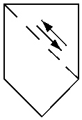
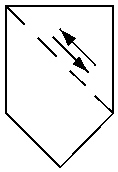

Back to main page Help

Vibrating screen separator
Description: -
Possible representation of: http://data.posccaesar.org/rdl/RDS43169083115
ISO10628 registration number: ISO10628-X2605
ISO14617 registration number: ISO14617-X2605

SuperClasses: Screening device
ProteusXml 3.6.0 code:
<Equipment ID="X2605" ComponentName="VibratingScreenSeparator_X2605" ComponentClass="VibratingScreenSeparator"
ComponentClassURI="http://data.posccaesar.org/rdl/RDS43169083115">
<GenericAttributes Number="1" Set="DexpiAttributes">
<GenericAttribute Name="SymbolRegistrationNumberAssignmentClass"
Value="ISO10628-X2605"
AttributeURI="http://sandbox.dexpi.org/rdl/SymbolRegistrationNumberAssigmentClass" />
</GenericAttributes>
<Extent>
<Min X="-7.5" Y="-10" Z="0" />
<Max X="7.5" Y="12.5" Z="0" />
</Extent>
<Position>
<Location X="0" Y="0" Z="0" />
<Axis X="0" Y="0" Z="1" />
<Reference X="1" Y="0" Z="0" />
</Position>
<PolyLine NumPoints="6">
<Presentation Layer="0" Color="0" LineType="Solid" LineWeight="0.25" R="0" G="0" B="0" />
<Extent>
<Min X="-7.5" Y="-10" />
<Max X="7.5" Y="12.5" />
</Extent>
<Coordinate X="0" Y="-10" />
<Coordinate X="7.5" Y="-2.5" />
<Coordinate X="7.5" Y="12.5" />
<Coordinate X="-7.5" Y="12.5" />
<Coordinate X="-7.5" Y="-2.5" />
<Coordinate X="0" Y="-10" />
</PolyLine>
<PolyLine NumPoints="2">
<Presentation Layer="0" Color="0" LineType="Solid" LineWeight="0.25" R="0" G="0" B="0" />
<Extent>
<Min X="-7.5" Y="10" />
<Max X="-5" Y="12.5" />
</Extent>
<Coordinate X="-7.5" Y="12.5" />
<Coordinate X="-5" Y="10" />
</PolyLine>
<PolyLine NumPoints="2">
<Presentation Layer="0" Color="0" LineType="Solid" LineWeight="0.25" R="0" G="0" B="0" />
<Extent>
<Min X="-3" Y="5.5" />
<Max X="-0.5" Y="8" />
</Extent>
<Coordinate X="-3" Y="8" />
<Coordinate X="-0.5" Y="5.5" />
</PolyLine>
<PolyLine NumPoints="2">
<Presentation Layer="0" Color="0" LineType="Solid" LineWeight="0.25" R="0" G="0" B="0" />
<Extent>
<Min X="1.5" Y="1.5" />
<Max X="3.5" Y="3.5" />
</Extent>
<Coordinate X="1.5" Y="3.5" />
<Coordinate X="3.5" Y="1.5" />
</PolyLine>
<PolyLine NumPoints="2">
<Presentation Layer="0" Color="0" LineType="Solid" LineWeight="0.25" R="0" G="0" B="0" />
<Extent>
<Min X="7.5" Y="-2.5" />
<Max X="5" Y="0" />
</Extent>
<Coordinate X="5" Y="0" />
<Coordinate X="7.5" Y="-2.5" />
</PolyLine>
<Shape NumPoints="4" Filled="Solid">
<Presentation Layer="0" Color="0" LineType="Solid" LineWeight="0.25" R="0" G="0" B="0" />
<Extent>
<Min X="1.696" Y="3.25" />
<Max X="4" Y="5.554" />
</Extent>
<Coordinate X="4" Y="3.25" />
<Coordinate X="2.775" Y="5.554" />
<Coordinate X="1.696" Y="4.475" />
<Coordinate X="4" Y="3.25" />
</Shape>
<PolyLine NumPoints="2">
<Presentation Layer="0" Color="0" LineType="Solid" LineWeight="0.2" R="0" G="0" B="0" />
<Extent>
<Min X="-0.95" Y="3.25" />
<Max X="4" Y="8.2" />
</Extent>
<Coordinate X="4" Y="3.25" />
<Coordinate X="-0.95" Y="8.2" />
</PolyLine>
<Shape NumPoints="4" Filled="Solid">
<Presentation Layer="0" Color="0" LineType="Solid" LineWeight="0.25" R="0" G="0" B="0" />
<Extent>
<Min X="0" Y="9.25" />
<Max X="2.304" Y="6.946" />
</Extent>
<Coordinate X="0" Y="9.25" />
<Coordinate X="1.225" Y="6.946" />
<Coordinate X="2.304" Y="8.025" />
<Coordinate X="0" Y="9.25" />
</Shape>
<PolyLine NumPoints="2">
<Presentation Layer="0" Color="0" LineType="Solid" LineWeight="0.2" R="0" G="0" B="0" />
<Extent>
<Min X="0" Y="4.3" />
<Max X="4.95" Y="9.25" />
</Extent>
<Coordinate X="0" Y="9.25" />
<Coordinate X="4.95" Y="4.3" />
</PolyLine>
<!-- Nodes suggested by DIN ISO 10628 -->
<ConnectionPoints NumPoints="3" FlowIn="1" FlowOut="2">
<!-- Node 0 : Position -->
<Node>
<Position>
<Location X="0" Y="0" Z="0" />
<Axis X="0" Y="0" Z="1" />
<Reference X="1" Y="0" Z="0" />
</Position>
</Node>
<!-- Node 1: FlowIn -->
<Node>
<Position>
<Location X="0" Y="12.5" Z="0" />
<Axis X="0" Y="0" Z="1" />
<Reference X="1" Y="0" Z="0" />
</Position>
</Node>
<!-- Node 2: FlowOut -->
<Node>
<Position>
<Location X="7.5" Y="0" Z="0" />
<Axis X="0" Y="0" Z="1" />
<Reference X="1" Y="0" Z="0" />
</Position>
</Node>
</ConnectionPoints>
</Equipment>